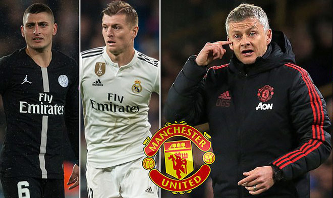
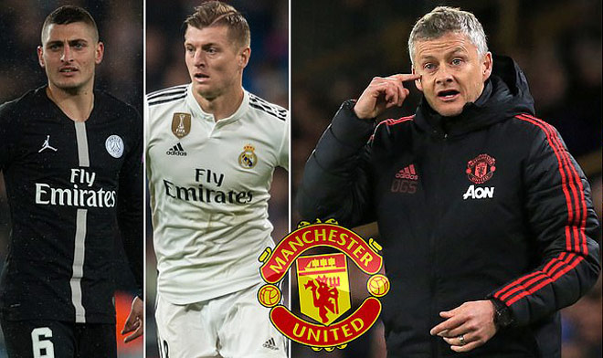

Tin Tức Mới
 

MU chính thức bổ nhiệm Solskjaer: Hợp đồng 3 năm, tái sinh "đế chế"
Cách đây ít phút, trên trang chủ của mình, MU đã đưa ra thông tin rất đáng chú ý với nhan đề "Solskjaer được thông báo sẽ là HLV chính thức", trong đó có đoạn viết: "Manchester United thông báo HLV tạm quyền và là cựu tiền đạo Ole Gunnar Solskjaer đã được bổ nhiệm làm HLV chính thức của CLB theo bản hợp đồng có thời hạn 3 năm."
Đây là thành quả xứng đáng cho "Sát thủ có bộ mặt trẻ thơ" sau những gì ông đã làm kể từ khi được "Quỷ đỏ" bổ nhiệm làm HLV tạm quyền vào ngày 19/12/2018 thay thế người tiền nhiệm Jose Mourinho (bị sa thải). Dưới sự dẫn dắt của Solskjaer, MU đã thắng đến 14 trận, hòa 2 và chỉ thua 3 trận trong 19 trận gần nhất trên mọi đấu trường. "Quỷ đỏ" của HLV Solsa đã giành được nhiều điểm số ở giải Ngoại hạng Anh hơn bất cứ đội bóng nào khác ở cùng thời điểm này.
Đội chủ sân Old Trafford đã lội ngược dòng xuất sắc hạ PSG để có mặt ở tứ kết Champions League gặp Barcelona và đang đua tranh quyết liệt nhằm cán đích top 4 giải Ngoại hạng. Cuối tuần này, MU sẽ có trận đấu đầu tiên khi Solsa làm HLV chính thức của CLB này để đối đầu Watford ở vòng 32 giải Ngoại hạng Anh trên sân nhà Old Trafford.
Pogba quyết rời MU: Phân vân trở lại Juventus hoặc đến Real
Những vấn đề với Mourinho trong mùa giải cuối của ông với MU từng đẩy Pogba gần đến bờ vực chia tay đội bóng ngay trong mùa Đông, tuy nhiên sự có mặt của Solskjaer đã xoa dịu tất cả. Nhưng hiện tại, nguồn tin từ AS cho hay Pogba “đã đến thời điểm muốn thay đổi” và anh có thể sẽ “trở lại Italia hoặc sang Tây Ban Nha thi đấu”.
Nguồn tin này cũng cho biết Raiola, chuyên gia trong những thương vụ chuyển nhượng khó, đã bắt đầu công việc cân đo đong đếm giữa các bên. Hợp đồng hiện tại của Pogba với MU sẽ đáo hạn vào năm 2021 và cũng đã từ chối gia hạn với lý do “cần thời gian để suy nghĩ”.
Nếu Pogba nhất quyết muốn ra đi, câu chuyện tại MU vào mùa Hè này sẽ rất nóng bỏng. Pogba hiện đang đòi 298.000 euro/tuần (16 triệu euro/năm) cho hợp đồng mới. Nếu Pogba không gia hạn trước Hè này, MU cần phải nghĩ đến việc bán anh ngay lập tức, bởi nếu để sang hè 2020, họ sẽ lâm vào vị thế người bị ép giá.
Với mức lương trong khoảng 10-12 triệu euro/năm như hiện tại của Pogba, anh nhiều khả năng sẽ lọt vào nhóm cầu thủ hưởng lương cao nhất Real nếu cập bến đội bóng vào hè này. Hiện ở Real có Bale đạt mức 14 triệu euro/năm và Ramos đạt 11 triệu euro/năm. Dự kiến mức lương của Pogba sẽ tương đương với Modric và Benzema.
MU gây sốc săn 3 “bom tấn” 200 triệu bảng: Solskjaer nâng tầm “Quỷ đỏ”
Giám đốc điều hành cho biết:"tiền nhiều để làm gì? tiền nhiều để làm gì mà để ngày hôm nay như thế này!"
Gần đây Paul Pogba đang bóng gió muốn ra đi, cụ thể là “bắn tin” tới Real Madrid – đội bóng mới tái hợp HLV Zidane. MU đương nhiên chẳng chịu mất tiền vệ người Pháp, nhưng trong trường hợp anh nhất quyết “đào tẩu” khỏi Old Trafford thì “Quỷ đỏ” cũng chấp nhận. Theo tờ Dailymail, MU đã chủ động săn tìm những tìm vệ hàng đầu nhằm thay thế cho Pogba.
Marco Verratti chính là mục tiêu lâu nay của MU. Hè năm ngoái, MU cũng đã tiếp cận “tiểu Pirlo” và sẵn sàng chi đậm nhưng cuối cùng tiền vệ người Italia quyết định ở lại PSG. Sau những gì trải qua trong mùa giải, Verratti có vẻ chán nản với PSG, một phần vì triết lý của HLV Tuchel không làm anh thoải mái nhất. 90 triệu bảng đó là cái giá của Verratti lúc này.
Không chỉ có tham vọng mua Verratti, MU còn săn Toni Kroos (50 triệu bảng). Báo chí Anh trước đó từng tiết lộ, nhiều khả năng MU và Real Madrid sẽ trao đổi “bom tấn”, Pogba đến Bernabeu còn Kroos gia nhập “Nhà hát những giấc mơ”. Sau những vinh quang ở Real Madrid, ngôi sao người Đức được cho là muốn tìm kiếm thử thách mới và Premier League hấp dẫn anh.